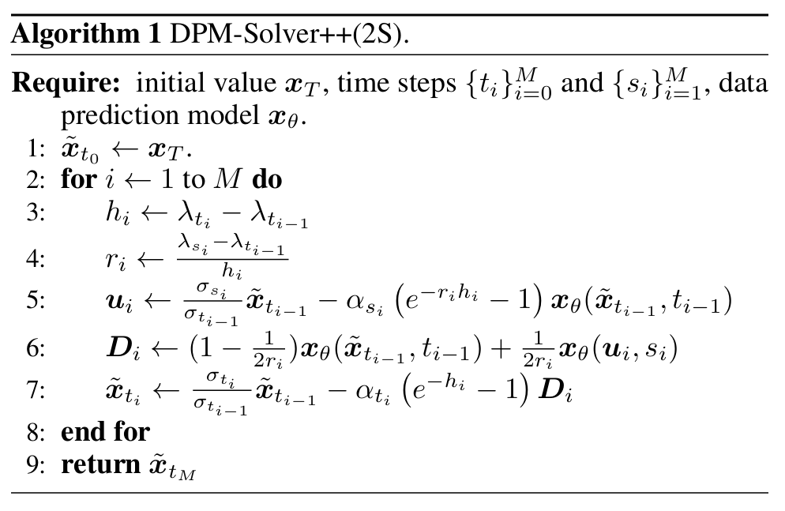
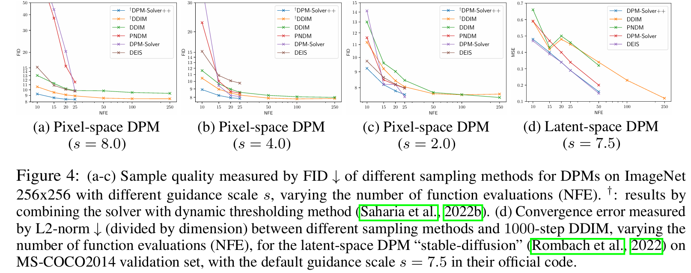

全文翻译
摘要
扩散概率模型（DPMs）在高分辨率图像合成中取得了显著成功，尤其是在近期大规模文本到图像生成应用中。一种提高DPMs样本质量的关键技术是引导采样，通常需要较大的引导尺度才能获得最佳样本质量。常用的引导采样快速采样器是DDIM，它是一种一阶扩散常微分方程（ODE）求解器，通常需要100到250步才能生成高质量样本。尽管近期有研究提出了专用的高阶求解器，并在无引导采样方面实现了进一步加速，但它们在引导采样中的有效性此前尚未得到充分测试。在这项工作中，我们证明了以前的高阶快速采样器存在不稳定性问题，并且当引导尺度增大时，它们甚至比DDIM更慢。为了进一步加速引导采样，我们提出了DPM-Solver++，这是一种用于DPMs引导采样的高阶求解器。DPM-Solver++使用数据预测模型求解扩散ODE，并采用阈值化方法使解与训练数据分布相匹配。我们进一步提出了DPM-Solver++的多步变体，通过减小有效步长来解决不稳定性问题。实验表明，DPM-Solver++仅需15到20步就能为像素空间和潜空间DPMs的引导采样生成高质量样本。
1 引言
扩散概率模型（DPMs）（Sohl-Dickstein等人，2015；Ho等人，2020；Song等人，2021b）在各种任务中取得了显著成功，例如高分辨率图像合成（Dhariwal和Nichol，2021；Ho等人，2022；Rombach等人，2022）、图像编辑（Meng等人，2022；Saharia等人，2022a；Zhao等人，2022）、文本到图像生成（Nichol等人，2021；Saharia等人，2022b；Ramesh等人，2022；Rombach等人，2022；Gu等人，2022）、语音合成（Liu等人，2022a；Chen等人，2021a、b）、分子生成（Xu等人，2022；Hoogeboom等人，2022；Wu等人，2022）和数据压缩（Theis等人，2022；Kingma等人，2021）。与生成对抗网络（GANs）（Goodfellow等人，2014）和变分自编码器（VAEs）（Kingma和Welling，2014）等其他深度生成模型相比，DPMs通过利用一种称为引导采样的关键技术（Dhariwal和Nichol，2021；Ho和Salimans，2021），甚至可以实现更好的样本质量。该技术使用额外的引导模型来提高样本保真度和条件样本对齐度。通过它，DPMs在文本到图像和图像到图像任务中可以生成与给定条件高度相关的高分辨率逼真艺术图像，引领了人工智能绘画的新潮流。
DPMs的采样过程是从纯高斯随机变量中逐渐去除噪声以获得清晰数据，这可以看作是对由参数化噪声预测模型或数据预测模型定义的扩散随机微分方程（SDEs）（Ho等人，2020；Song等人，2021b）或扩散常微分方程（ODEs）（Song等人，2021b、a）进行离散化（Ho等人，2020；Kingma等人，2021）。DPMs的引导采样也可以通过将无条件模型与引导模型相结合，用这种离散化方法进行形式化，其中一个超参数控制引导模型的尺度（即引导尺度）。常用的引导采样方法是DDIM（Song等人，2021a），它被证明是一种一阶扩散ODE求解器（Salimans和Ho，2022；Lu等人，2022），通常需要进行100到250次大规模神经网络评估才能收敛，非常耗时。
专用的高阶扩散ODE求解器（Lu等人，2022；Zhang和Chen，2022）可以在10到20步内为无引导采样生成高质量样本。然而，它们在引导采样中的有效性此前尚未得到仔细研究。在这项工作中，我们证明了以前用于DPMs的高阶求解器在引导采样时生成的样本不尽人意，甚至比简单的一阶求解器DDIM还差。我们确定了将高阶求解器应用于引导采样面临的两个挑战：（1）较大的引导尺度缩小了高阶求解器的收敛半径，使其不稳定；（2）收敛解与原始数据不在同一范围内（也称为 “训练 - 测试不匹配”（Saharia等人，2022b））。
基于这些观察，我们提出了DPM-Solver++，这是一种无需训练的用于引导采样的快速扩散ODE求解器。我们发现DPM的参数化对解的质量有至关重要的影响。随后，我们求解由数据预测模型定义的扩散ODE，该模型根据含噪数据预测干净数据。我们推导了一种用于求解具有数据预测参数化的ODE的高阶求解器，并采用动态阈值化方法（Saharia等人，2022b）来缓解训练 - 测试不匹配问题。此外，我们开发了一种多步求解器，使用较小的步长来解决不稳定性问题。
如图1所示，DPM-Solver++仅需15步就能生成高质量样本，比之前所有无需训练的引导采样采样器都要快得多。我们的额外实验结果表明，DPM-Solver++可以生成高保真样本，并且在仅15到20步内几乎就能收敛，适用于各种引导采样应用，包括像素空间DPMs和潜空间DPMs。
| 图1：以往的高阶求解器在引导采样中不稳定：在ImageNet 256×256数据集上，使用预训练的扩散概率模型（Dhariwal和Nichol，2021），分类器引导尺度设为8.0，仅进行15次函数评估，采用不同采样器（以及不同求解器阶数）生成的样本。†：采用动态阈值化的DDIM（Saharia等人，2022b）。我们提出的DPM-Solver++（详见算法2）能够生成比一阶DDIM更好的样本，而其他高阶采样器生成的样本比DDIM更差。 |
2 扩散概率模型
在本节中，我们回顾扩散概率模型（DPMs）及其采样方法。
2.1 基于扩散ODE的DPMs快速采样
扩散概率模型（DPMs）（Sohl-Dickstein等人，2015；Ho等人，2020；Song等人，2021b）逐渐向一个$D$维随机变量$x_{0} \in \mathbb{R}^{D}$添加高斯噪声，从而将时间0时相应的未知数据分布$q_{0}(x_{0})$扰动为时间$T>0$时的简单正态分布$q_{T}(x_{T}) \approx N(x_{T} | 0, \tilde{\sigma}^{2} I)$，其中$\tilde{\sigma}>0$。在每个时间$t \in [0, T]$，转移分布$q_{t0}(x_{t} | x_{0})$满足：
其中$\alpha_{t}$、$\sigma_{t}>0$，且信噪比（SNR）$\alpha_{t}^{2} / \sigma_{t}^{2}$随时间$t$严格递减（Kingma等人，2021）。公式（1）可以写成$x_{t}=\alpha_{t} x_{0}+\sigma_{t} \epsilon$，其中$\epsilon \sim N(0, I)$。
- 参数化：噪声预测和数据预测：DPMs通过顺序去噪过程，基于含噪输入$x_{T}$学习恢复数据$x_{0}$。定义模型有两种可选方式。噪声预测模型$\epsilon_{\theta}(x_{t}, t)$试图从数据$x_{t}$中预测噪声$\epsilon$，它通过以下目标来优化参数$\theta$（Ho等人，2020；Song等人，2021b）：其中$x_{0} \sim q_{0}(x_{0})$，$\epsilon \sim N(0, I)$，$t \sim U([0,1])$，且$\omega(t)>0$是一个加权函数。另外，数据预测模型$x_{\theta}(x_{t}, t)$基于含噪的$x_{t}$预测原始数据$x_{0}$，它与$\epsilon_{\theta}(x_{t}, t)$的关系为$x_{\theta}(x_{t}, t):=(x_{t}-\sigma_{t} \epsilon_{\theta}(x_{t}, t)) / \alpha_{t}$（Kingma等人，2021）。
- 扩散ODE采样：DPMs的采样可以通过求解扩散ODE来实现（Song等人，2021b、a；Liu等人，2022b；Zhang和Chen，2022；Lu等人，2022），这通常比其他采样方法更快。具体来说，基于扩散ODE的采样需要对以下ODE进行离散化（Song等人，2021b），其中时间$t$从$T$变化到$0$：关于数据预测模型$x_{\theta}$的等效扩散ODE为：其中系数$f(t)=\frac{d log \alpha_{t}}{~d t}$，$g^{2}(t)=\frac{d \sigma_{t}^{2}}{~d t}-2 \frac{d log \alpha_{t}}{~d t} \sigma_{t}^{2}$（Kingma等人，2021）。
2.2 DPMs的引导采样
引导采样（Dhariwal和Nichol，2021；Ho和Salimans，2021）是一种广泛应用于DPMs条件采样的技术，在文本到图像、图像到图像和类别到图像的应用中非常有用（Dhariwal和Nichol，2021；Saharia等人，2022b；Rombach等人，2022；Nichol等人，2021；Ramesh等人，2022）。给定一个条件变量$c$，引导采样定义了一个条件噪声预测模型$\tilde{\epsilon}_{\theta}(x_{t}, t, c)$。引导采样方法有两种类型，取决于它们是否需要分类器模型。
- 分类器引导：分类器引导（Dhariwal和Nichol，2021）利用预训练的分类器$p_{\phi}(c | x_{t}, t)$来定义条件噪声预测模型：其中$s>0$是引导尺度。在实践中，为了提高引导采样中的条件样本对齐度，通常倾向于使用较大的$s$（Rombach等人，2022；Saharia等人，2022b）。
- 无分类器引导：无分类器引导（Ho和Salimans，2021）对无条件和有条件噪声预测模型使用相同的参数化模型$\epsilon_{\theta}(x_{t}, t, c)$，其中无条件模型的输入$c$是一个特殊占位符$\infty$。相应的条件模型定义为：然后，可以通过用$\epsilon_{\theta}(x_{t}, t, c)$代替$\epsilon_{\theta}(x_{t}, t)$来求解ODE（3），从而得到样本。DDIM（Song等人，2021a）是一种典型的引导采样求解器，它需要几百步来生成样本。
2.3 指数积分器和高阶ODE求解器
最近的研究（Lu等人，2022；Zhang和Chen，2022）表明，基于指数积分器（Hochbruck和Ostermann，2010）的ODE求解器在求解无条件扩散ODE（3）时，比传统求解器收敛速度快得多。给定时间$s>0$时的初始值$x_{s}$，Lu等人（2022）推导出扩散ODE（3）在时间$t$的解$x_{t}$为：
其中通过变量变换公式，ODE从$(t)$域转换到了对数信噪比（$\lambda$）域。这里，对数信噪比$\lambda_{t}:=log (\alpha_{t} / \sigma_{t})$是$t$的严格递减函数，其反函数为$t_{\lambda}(\cdot)$，且$\hat{x}_{\lambda}:=x_{t_{\lambda}(\lambda)}$，$\hat{\epsilon}_{\theta}(\hat{x}_{\lambda}, \lambda):=\epsilon_{\theta}(x_{t_{\lambda}(\lambda)}, t_{\lambda}(\lambda))$是关于$\lambda$的相应变量变换形式。Lu等人（2022）表明，DDIM是公式（7）的一阶求解器。他们进一步提出了一种名为“DPM-Solver”的高阶求解器，它可以在仅10 - 20步内为无条件模型生成逼真的样本。
不幸的是，现有高阶求解器的出色效率在引导采样中并未体现，我们将很快对此进行讨论。
3 高阶求解器用于引导采样面临的挑战
在开发新的快速求解器之前，我们首先研究现有高阶扩散常微分方程（ODE）求解器的性能，并突出其中面临的挑战。
第一个挑战是较大的引导尺度会导致高阶求解器不稳定。如图1所示，当引导尺度$s = 8.0$且进行15次函数评估时，以往的高阶扩散ODE求解器（Lu等人，2022；Zhang和Chen，2022；Liu等人，2022b）生成的图像质量较低。它们生成的样本质量甚至比一阶的DDIM还差。此外，求解器的阶数越高，样本质量反而越差。
直观来看，较大的引导尺度可能会同时放大模型$\tilde{\epsilon}_{\theta}$在公式（5）中的输出和导数。模型的导数会影响ODE求解器的收敛范围，这种放大效应可能会导致高阶ODE求解器需要更小的步长才能收敛，因此高阶求解器的性能可能会比一阶求解器更差。而且，高阶求解器需要计算高阶导数，而高阶导数通常对这种放大效应更为敏感，这进一步缩小了收敛半径。
第二个挑战是“训练-测试不匹配”问题（Saharia等人，2022b）。数据通常位于一个有界区间内（例如，图像数据的区间为$[-1, 1]$）。然而，较大的引导尺度会使条件噪声预测模型$\tilde{\epsilon}_{\theta}(x_{t}, t, c)$偏离真实噪声，进而导致样本（即扩散ODE的收敛解$x_{0}$）超出边界。在这种情况下，生成的图像会出现饱和且不自然的现象（Saharia等人，2022b）。
4 设计用于引导采样的免训练快速采样器
在本节中，我们设计了新的高阶扩散ODE求解器，以实现更快的引导采样。如第3节所述，以往的高阶求解器在大引导尺度下存在不稳定性和 “训练-测试不匹配” 问题。“训练-测试不匹配” 问题源于ODE本身，我们发现ODE的参数化对于收敛解的有界性至关重要。以往的高阶求解器是为噪声预测模型 $\tilde{\epsilon}_{\theta}$ 设计的，而我们求解数据预测模型 $x_{\theta}$ 的ODE（4），该模型本身具有一些优势，并且可以进一步采用阈值化方法来确保样本有界（Ho等人，2020；Saharia等人，2022b）。我们还提出了一种多步求解器来解决不稳定性问题。
4.1 基于数据预测模型设计求解器
我们沿用Lu等人（2022）中的符号。给定一个从 $t_{0}=T$ 递减到 $t_{M}=0$ 的序列 $\{t_{i}\}_{i = 0}^{M}$ 以及初始值 $x_{t_{0}} \sim N(0 | \tilde{\sigma}^{2} I)$，求解器旨在迭代计算序列 $\{\tilde{x}_{t_{i}}\}_{i = 0}^{M}$，以逼近每个时间 $t_{i}$ 处的精确解，最终值 $\tilde{x}_{t_{M}}$ 即为扩散ODE的近似样本。记 $h_{i}:=\lambda_{t_{i}}-\lambda_{t_{i - 1}}$，其中 $i = 1, \cdots, M$。
为求解关于 $x_{\theta}$ 的扩散ODE（4），我们首先给出以下关于 $x_{\theta}$ 的扩散ODE精确解的简化形式。这种形式精确计算了公式（4）中的线性项，并且仅保留了 $x_{\theta}$ 的指数加权积分。记 $\hat{x}_{\theta}(\hat{x}_{\lambda}, \lambda):=x_{\theta}(x_{t_{\lambda}(\lambda)}, t_{\lambda}(\lambda))$ 为 $x_{\theta}$ 关于 $\lambda$ 的变量变换形式，我们有：
命题4.1（$x_{\theta}$ 的扩散ODE精确解，证明见附录A）：给定时间 $s>0$ 时的初始值 $x_{s}$，公式（4）中扩散ODE在时间 $t \in [0, s]$ 的解 $x_{t}$ 为：
由于公式（3）和公式（4）中的扩散ODE是等价的，公式（7）和公式（8）中的精确解形式也是等价的。然而，从设计ODE求解器的角度来看，这两种形式是不同的。首先，公式（7）精确计算线性项 $\frac{\alpha_{1}}{\alpha_{s}} x_{s}$，而公式（8）精确计算另一个线性项 $\frac{\sigma_{2}}{\sigma_{s}} x_{s}$。此外，为设计ODE求解器，公式（7）需要近似积分 $\int e^{-\lambda} \epsilon_{\theta} d \lambda$，而公式（8）需要近似 $\int e^{\lambda} x_{\theta} d \lambda$，这两个积分是不同的（回想一下 $x_{\theta}:=(x_{t}-\sigma_{t} \epsilon_{\theta}) / \alpha_{t}$）。因此，基于公式（7）和公式（8）的高阶求解器本质上是不同的。我们进一步给出基于公式（8）设计高阶ODE求解器的一般方法。
给定时间 $t_{i - 1}$ 处的先前值 $\tilde{x}_{t_{i - 1}}$，我们求解器的目标是逼近时间 $t_{i}$ 处的精确解。记 $x_{\theta}^{(n)}(\lambda):=\frac{d^{n} \hat{x}_{\theta}(x_{\lambda}, \lambda)}{d \lambda^{n}}$ 为 $x_{\theta}$ 关于对数信噪比 $\lambda$ 的 $n$ 阶总导数。
对于 $k \geq 1$，对 $x_{\theta}$ 在 $\lambda \in [\lambda_{t_{i - 1}}, \lambda_{t_{i}}]$ 上关于 $\lambda_{t_{i - 1}}$ 进行 $(k - 1)$ 阶泰勒展开，并将其代入公式（8）（其中 $s = t_{i - 1}$，$t = t_{i}$），我们得到：
其中积分 $\int e^{\lambda} \frac{(\lambda-\lambda_{t_{i - 1}})^{n}}{n!} d \lambda$ 可以通过分部积分法进行解析计算（详见附录A）。因此，为设计一个 $k$ 阶ODE求解器，在省略 $O(h_{i}^{k + 1})$ 高阶误差项后，我们只需要估计 $n \leq k - 1$ 时的 $n$ 阶导数 $x_{\theta}^{(n)}(\lambda_{t_{i - 1}})$，这些都是经过充分研究的技术，我们将在4.2节详细讨论。$k = 1$ 是一个特殊情况，此时求解器与DDIM（Song等人，2021a）相同，我们将在6.1节讨论。
对于 $k = 2$，我们使用与DPM-Solver-2（Lu等人，2022）类似的技术来估计导数 $x_{\theta}^{(1)}(\hat{x}_{\lambda_{t_{i - 1}}}, \lambda_{t_{i - 1}})$。具体来说，我们在 $t_{i - 1}$ 和 $t_{i}$ 之间引入一个额外的中间时间步 $s_{i}$，并结合 $s_{i}$ 和 $t_{i - 1}$ 处的函数值来近似导数，这是单步ODE求解器的标准方法（Atkinson等人，2011）。总体而言，我们需要 $2M + 1$ 个时间步（$\{t_{i}\}_{i = 0}^{M}$ 和 $\{s_{i}\}_{i = 1}^{M}$），满足 $t_{0}>s_{1}>t_{1}>\cdots>t_{M - 1}>s_{M}>t_{M}$ 。详细算法见算法1，在算法1中，我们将时间 $t_{i - 1}$ 处的先前值 $\tilde{x}_{t_{i - 1}}$ 与时间 $s_{i}$ 处的中间值 $u_{i}$ 相结合，计算时间 $t_{i}$ 处的值 $\tilde{x}_{t_{i}}$ 。
我们将该算法命名为DPM-Solver++(2S)，这意味着所提出的求解器是一种二阶单步方法。我们在附录A中给出了收敛阶数的理论保证。对于 $k \geq 3$，如第3节所述，高阶求解器可能不适合大引导尺度，因此在这项工作中我们主要考虑 $k = 2$，将更高阶求解器留作未来研究。
此外，我们在附录B中对DPM-Solver-2（Lu等人，2022）和DPM-Solver++(2S) 进行了理论比较。我们发现DPM-Solver++(2S) 在高阶误差项前的常数更小，因此通常比DPM-Solver-2具有更小的离散化误差。
|  |
|---|
| ** |
4.2 从单步到多步
在每一步（从 $t_{i - 1}$ 到 $t_{i}$），所提出的单步求解器需要对神经网络 $x_{\theta}$ 进行两次连续的函数评估。此外，中间值 $u_{i}$ 仅使用一次就被丢弃。这种方法丢失了先前的信息，可能效率不高。在本节中，我们提出另一种二阶扩散ODE求解器，它在每一步都利用先前的信息。
一般来说，为了近似公式（9）中 $n \geq 1$ 时的导数 $x_{\theta}^{(n)}$，还有另一种主流方法（Atkinson等人，2011）：多步方法（如Adams–Bashforth方法）。给定时间 $t_{i - 1}$ 处的先前值 $\{\tilde{x}_{t_{j}}\}_{j = 0}^{i - 1}$，多步方法通过重用先前的值来近似高阶导数。经验表明，多步方法比单步方法更高效，尤其是在函数评估次数有限的情况下（Atkinson等人，2011）。
我们将设计多步求解器的技术与公式（9）中的泰勒展开相结合，进一步提出了一种用于 $x_{\theta}$ 的扩散ODE的多步二阶求解器。详细算法见算法2，在算法2中，我们结合先前值 $\overline{x}_{t_{i - 1}}$ 和 $\tilde{x}_{t_{i - 2}}$ 来计算值 $\bar{x}_{t_{i}}$，无需额外的中间值。我们将该算法命名为DPM-Solver++(2M)，这意味着所提出的求解器是一种二阶多步求解器。我们也在附录A中给出了收敛阶数的详细理论保证。
| ** |
对于固定的总函数评估次数预算 $N$，多步方法可以使用 $M = N$ 步，而 $k$ 阶单步方法最多只能使用不超过 $M = N / k$ 步。因此，多步方法的每一步步长 $h_{i}$ 大约是单步方法的 $1/k$，所以多步方法公式（9）中的高阶误差项 $O(h_{i}^{k})$ 也可能比单步方法的更小。我们在7.1节表明，多步方法略优于单步方法。
4.3 DPM-Solver++与阈值化方法相结合
对于有界数据的分布（如图像数据），阈值化方法（Ho等人，2020；Saharia等人，2022b）可以将超出边界的样本向内推，在一定程度上减少大引导尺度的不利影响。具体来说，阈值化方法通过在数据边界内对原始模型 $x_{\theta}:=(x_{t}-\sigma_{t} \epsilon_{\theta}) / \alpha_{t}$ 进行逐元素裁剪，定义了一个裁剪后的数据预测模型 $\hat{x}_{\theta}(x_{t}, t, c)$，这在大引导尺度下可以提高样本质量（Saharia等人，2022b）。由于我们提出的DPM-Solver++是为 $x_{\theta}$ 模型设计的，我们可以直接将阈值化方法与DPM-Solver++相结合。
5 扩散随机微分方程（SDEs）的快速求解器
扩散模型的采样也可以通过求解扩散随机微分方程（Song等人，2021b）来实现：
其中，$\overline{w}_t$是从$T$到$0$的反向维纳过程。在本节中，我们考虑关于对数信噪比$\lambda$的扩散随机微分方程，并推导相应的二阶求解器。
记$dw_{\lambda} := \sqrt{-\frac{d\lambda_t}{dt}}d\overline{w}_{t_{\lambda}(\lambda)}$为关于$\lambda$的相应维纳过程。为简化表示，记$x_{\lambda} := x_{t(\lambda)}$，$\sigma_{\lambda} := \sigma_{t(\lambda)}$，$w_{\lambda} := w_{\lambda_t}$，$\epsilon_{\theta}(x_{\lambda},\lambda) := \epsilon_{\theta}(x_{t(\lambda)},t(\lambda))$。对于VP型扩散模型（Song等人，2021b）（即$\alpha_t^2 + \sigma_t^2 = 1$），我们有$\frac{d\log\alpha_{\lambda}}{d\lambda} = \sigma_{\lambda}^2$且$\frac{d\log\sigma_{\lambda}}{d\lambda} = -\alpha_{\lambda}^2$。由于$f(t) = \frac{d\log\alpha_t}{dt}$且$g(t) = \sigma_t\sqrt{-2\frac{d\lambda_t}{dt}}$（Kingma等人，2021），关于$\lambda$的扩散随机微分方程为：
通过应用常数变易公式，我们给出扩散随机微分方程的精确解如下。
命题5.1（扩散随机微分方程的精确解，证明见附录A）：给定在时间$s > 0$的初始值$x_s$，方程（10）中扩散随机微分方程在时间$t \in [0, s]$的解$x_t$为：
此外，我们可以通过以下方式计算伊藤积分：
其中$z_s \sim N(0, I)$。因此，我们可以对关于$\epsilon_{\theta}$或$x_{\theta}$的积分进行离散化，得到相应的扩散随机微分方程求解器，如下所示。为简化表示，记$h := \lambda_t - \lambda_s$。
- SDE-DPM-Solver-1：令$z_s \sim N(0, I)$。假设$\epsilon_{\theta}(x_{\lambda},\lambda) \approx \epsilon_{\theta}(x_s,s)$，则有：
- SDE-DPM-Solver++1：令$z_s \sim N(0, I)$。假设$x_{\theta}(x_{\lambda},\lambda) \approx x_{\theta}(x_s,s)$，则有：
- SDE-DPM-Solver-2M：令$z_s \sim N(0, I)$。假设在时间$r < t$有一个先前的解$x_r$及其模型输出$\epsilon_{\theta}(x_r,r)$。记$r_1 = \frac{\lambda_r - \lambda_s}{h}$。假设$\epsilon_{\theta}(x_{\lambda},\lambda) \approx \epsilon_{\theta}(x_s,s) + \frac{\lambda - \lambda_s}{r_1h}(\epsilon_{\theta}(x_r,r) - \epsilon_{\theta}(x_s,s))$，则有：
- SDE-DPM-Solver++(2M)：令$z_s \sim N(0, I)$。假设在时间$r < t$有一个先前的解$x_r$及其模型输出$x_{\theta}(x_r,r)$。记$r_1 = \frac{\lambda_r - \lambda_s}{h}$。假设$x_{\theta}(x_{\lambda},\lambda) \approx x_{\theta}(x_s,s) + \frac{\lambda - \lambda_s}{r_1h}(x_{\theta}(x_r,r) - x_{\theta}(x_s,s))$，则有：
6 与其他快速采样方法的关系
本质上，所有针对扩散概率模型（DPMs）的免训练采样方法，都可理解为对扩散随机微分方程（SDEs）进行离散化（Ho等人，2020；Song等人，2021b；Jolicoeur-Martineau等人，2021；Tachibana等人，2021；Kong和Ping，2021；Bao等人，2022b；Zhang等人，2022），或者对扩散常微分方程（ODEs）进行离散化（Song等人，2021b、a；Liu等人，2022b；Zhang和Chen，2022；Lu等人，2022）。由于DPM-Solver++是为求解扩散ODEs而设计的，在本节中，我们将探讨DPM-Solver++与其他扩散ODE求解器之间的关系，并简要讨论其他针对DPMs的快速采样方法。
6.1 与基于指数积分器的求解器的比较
一般版本的DDIM（$\eta \geq 0$）公式为（Song等人，2021a）：
以往最先进的快速扩散ODE求解器（Lu等人，2022；Zhang和Chen，2022）利用指数积分器，通过噪声预测模型$\epsilon_{\theta}$来求解扩散ODEs。简而言之，这些求解器对公式（7）中的精确解进行近似，并且将$\eta = 0$时的DDIM（Song等人，2021a）作为一阶情况。下面我们证明，DPM-Solver++的一阶情况同样是DDIM。
当$k = 1$时，公式（9）（省略$O(h_{i}^{k + 1})$项后）变为：
因此，我们提出的DPM-Solver++是$\eta = 0$时DDIM在数据预测模型$x_{\theta}$方面的高阶扩展。据我们所知，此前尚未有人提出过这种扩展。我们在表1中列出了以往基于指数积分器的高阶求解器与DPM-Solver++之间的详细差异。需要强调的是，尽管这些求解器的一阶版本是等价的，但它们的高阶版本却有很大不同。
| 表1：基于指数积分器的高阶扩散常微分方程（ODE）求解器之间的比较，包括DEIS（Zhang和Chen，2022）、DPM-Solver（Lu等人，2022）以及DPM-Solver++（我们提出的方法）。 |
此外，对于$\eta=\sigma_{t} \sqrt{1 - e^{-2h}}$的DDIM，很容易验证，这种随机DDIM与SDE-DPM-Solver++1是等价的。因此，我们提出的SDE-DPM-Solver++(2M)是一阶随机DDIM的二阶广义版本。据我们所知，此前的研究并未揭示这一发现。
6.2 其他快速采样方法
基于扩散SDEs的采样器（Ho等人，2020；Song等人，2021b；Jolicoeur-Martineau等人，2021；Tachibana等人，2021；Kong和Ping，2021；Bao等人，2022b；Zhang等人，2022）通常比基于扩散ODEs的采样器（Lu等人，2022）需要更多的步骤才能收敛，这是因为SDEs引入了更多的随机性，使得去噪更加困难。基于额外训练的采样器包括模型蒸馏（Salimans和Ho，2022；Luhman和Luhman，2021）、学习反向过程方差（San-Roman等人，2021；Nichol和Dhariwal，2021；Bao等人，2022a）以及学习采样步骤（Lam等人，2021；Watson等人，2022）。然而，基于训练的采样器难以扩展到预训练的大型DPMs（Saharia等人，2022b；Rombach等人，2022；Ramesh等人，2022）。还有其他快速采样方法，例如将原始DPMs修改到潜在空间（Vahdat等人，2021），或者引入动量（Dockhorn等人，2022）。此外，将DPMs与GANs相结合（Xiao等人，2022；Wang等人，2022），可以提高GANs的样本质量和DPMs的采样速度。
7 实验
在本节中，我们展示了DPM-Solver++能够加速像素空间和潜空间扩散概率模型（DPMs）的引导采样。我们改变函数评估次数（NFE，即对模型$\epsilon_{\theta}(x_{t}, t, c)$或$x_{\theta}(x_{t}, t, c)$的调用次数），并将DPM-Solver++与之前DPMs的前沿快速采样器进行比较，这些采样器包括DPM-Solver（Lu等人，2022）、DEIS（Zhang和Chen，2022）、PNDM（Liu等人，2022b）和DDIM（Song等人，2021a）。我们还将离散时间DPMs转换为连续时间，并使用这些连续时间求解器。具体的实现细节和实验设置请参考附录C。
由于之前的求解器没有测试在引导采样中的性能，我们还通过调整步长调度（即时间步$\{t_{i}\}_{i = 0}^{M}$的选择）和求解器阶数，仔细优化了基线采样器。我们发现：
- 步长调度：我们在以下几种选择中搜索时间步：均匀的$t$（这是高分辨率图像合成中广泛使用的设置）、均匀的$\lambda$（用于（Lu等人，2022））、$t$的幂函数的均匀划分（用于（Zhang和Chen，2022），详见附录C），结果发现最佳选择是均匀的$t$。因此，在我们所有实验中，对所有求解器的时间步都使用均匀的$t$。
- 求解器阶数：我们发现对于较大的引导尺度，之前所有求解器的最佳选择是二阶（即DPM-Solver-2和DEIS-1）。然而，为了进行全面比较，我们运行了之前求解器的所有阶数，包括DPM-Solver-2和DPM-Solver-3、DEIS-1、DEIS-2和DEIS-3，并在每次比较中针对每个NFE选择它们的最佳结果。
我们同时运行DPM-Solver++(2S)和DPM-Solver++(2M)，发现在较大引导尺度下，多步的DPM-Solver++(2M)性能更好；在稍小的引导尺度下，单步的DPM-Solver++(2S)性能更好。在后续章节中，我们报告DPM-Solver++和之前所有采样器的最佳结果，详细数值列于附录D。
7.1 带引导的像素空间DPMs
我们首先在ImageNet 256x256数据集上，使用预训练的DPMs（Dhariwal和Nichol，2021），将DPM-Solver++与其他采样器在分类器引导的采样任务中进行比较。我们通过绘制10000个样本并计算广泛使用的FID分数（Heusel等人，2017）来衡量样本质量，通常FID分数越低，样本质量越好。我们对DDIM和DPM-Solver++都采用动态阈值化方法（Saharia等人，2022b）。我们将引导尺度$s$设置为8.0、4.0和2.0，结果如图4（a - c）所示。我们发现，在较大引导尺度下，之前所有的高阶采样器（DEIS、PNDM、DPM-Solver）收敛速度都比一阶的DDIM慢，这表明之前的高阶采样器不稳定。相比之下，DPM-Solver++在大、小引导尺度下都实现了最佳的加速性能。特别是在大引导尺度下，DPM-Solver++仅需15次NFE就几乎可以收敛。
作为对比实验，我们还比较了单步的DPM-Solver-2、单步的DPM-Solver++(2S)和多步的DPM-Solver++(2M)，以证明我们方法的有效性。我们使用较大的引导尺度$s = 8.0$，并进行以下对比实验：
- 从$\epsilon_{\theta}$到$x_{\theta}$：如图3a所示，通过简单地将求解器从基于$\epsilon_{\theta}$改为基于$x_{\theta}$（即从DPM-Solver-2改为DPM-Solver++(2S)），求解器可以实现稳定的加速性能，比一阶的DDIM更快。这一结果表明，对于引导采样，基于$x_{\theta}$的高阶求解器可能比基于$\epsilon_{\theta}$的更优。
- 从单步到多步：如图3b所示，多步的DPM-Solver++(2M)收敛速度略快于单步的DPM-Solver++(2S)，多步的DPM-Solver++(2M)几乎在15次NFE内就可以收敛。这一结果表明，对于较大引导尺度的引导采样，多步方法可能比单步方法更快。
- 有无阈值化：我们在图3c中比较了DDIM和DPM-Solver++在有无阈值化方法下的性能。需要注意的是，阈值化方法会改变模型$x_{\theta}$，从而也会改变扩散ODE的收敛解。首先，我们发现使用阈值化方法后，扩散ODE可以生成更高质量的样本，这与（Saharia等人，2022b）中的结论一致。其次，在相同的NFE下，使用阈值化的DPM-Solver++的样本质量优于不使用阈值化的DPM-Solver++。此外，当结合阈值化方法时，DPM-Solver++比一阶的DDIM更快，这表明DPM-Solver++结合阈值化方法也可以加速DPMs的引导采样。
| 图3：DPM-Solver++的消融研究。在ImageNet 256×256数据集上，使用引导尺度为8.0的扩散概率模型（DPMs），采用不同采样方法并改变函数评估次数（NFE），通过FID来衡量样本质量。 |
7.2 带引导的潜空间DPMs
我们还在潜空间DPMs（Rombach等人，2022）上评估了DPM-Solver++，由于其官方代码“stable-diffusion”，潜空间DPMs最近在社区中很受欢迎。我们使用其官方代码中默认的引导尺度$s = 7.5$。潜空间DPMs通过训练一对编码器和解码器将图像数据映射为潜码，然后为潜码训练一个DPM。由于潜码是无界的，我们不应用阈值化方法。
具体来说，我们从MS-COCO2014验证数据集中随机采样10000个字幕-图像对，并使用字幕作为条件，从预训练的“stable-diffusion”模型中绘制10000张图像，并且按照（Nichol等人，2021；Rombach等人，2022）中的标准评估程序，对每个字幕仅绘制一个图像样本。我们发现，即使仅用10步，所有求解器的FID都能达到15.0至16.0左右，这与“stable-diffusion”官方页面上报告的收敛样本计算出的FID非常接近。我们认为这得益于强大的预训练解码器，它可以将未收敛的潜码映射为高质量的图像样本。对于潜空间DPMs，不同的扩散ODE求解器直接影响潜空间上的收敛速度。为了进一步比较不同的潜空间DPMs采样器，我们根据采样得到的$x_{0}$与真实解之间的L2范数（它们之间的误差为），直接比较不同求解器在潜空间上的收敛误差。具体来说，我们首先从标准正态分布中采样10000个噪声变量并固定它们。然后，使用不同的DPM采样器，从这10000个固定的噪声变量开始采样10000个潜码。由于所有这些求解器都可以理解为对扩散ODE进行离散化，我们将不同采样器在不同NFE下得到的采样潜码$x_{0}$，与999步DDIM得到的真实解$x_{0}^{*}$进行比较，结果如图4（d）所示。我们发现，“stable-diffusion”中支持的快速采样器（DDIM和PNDM）的收敛速度比DPM-Solver++和DEIS慢得多，并且我们发现二阶多步的DPM-Solver++和DEIS在潜空间上实现了相当接近的加速效果。此外，由于“stable-diffusion”默认使用50步的PNDM，我们发现DPM-Solver++仅需15至20步就能达到类似的收敛误差。我们在附录D中还给出了不同求解器采样图像的实证比较，发现DPM-Solver++确实可以在仅15至20步内生成质量相当好的图像样本。
|  |
|---|
| 图4：（a - c）在ImageNet 256x256数据集上，针对不同引导尺度s的扩散概率模型（DPMs），使用不同采样方法，通过FID衡量样本质量，同时改变函数评估次数（NFE）。†：求解器结合动态阈值化方法（Saharia等人，2022b）的结果。（d）在MS - COCO2014验证集上，针对潜空间DPM “stable - diffusion”（Rombach等人，2022），改变函数评估次数（NFE），通过L2范数（除以维度）衡量不同采样方法与1000步DDIM之间的收敛误差，其官方代码中默认引导尺度s = 7.5。 |
8 结论
我们研究了加速扩散概率模型（DPMs）引导采样的问题。研究表明，以往基于噪声预测模型的高阶求解器在大引导尺度的引导采样中异常不稳定，生成的样本质量比一阶求解器DDIM更差。为解决这一问题并加快引导采样速度，我们提出了DPM-Solver++，这是一种无需训练的快速扩散常微分方程（ODE）求解器，用于引导采样。DPM-Solver++基于使用数据预测模型的扩散ODE，可直接采用阈值化方法，进一步稳定采样过程。我们提出了DPM-Solver++的单步和多步变体。实验结果显示，DPM-Solver++能够生成高保真样本，并且仅需15至20步就几乎可以收敛，适用于像素空间和潜空间的DPMs。
伦理声明
与生成对抗网络（GANs）等其他深度生成模型一样，DPMs也可能被用于生成有害的虚假内容（图像）。本文提出的求解器可以加速DPMs的引导采样，这可能会进一步用于图像编辑并生成逼真的虚假图像。这种影响可能会放大DPMs在恶意应用中的潜在不良后果。
可重复性声明
我们的代码基于DPM-Solver（Lu等人，2022）的官方代码，以及Dhariwal和Nichol（2021）与Stable-Diffusion（Rombach等人，2022）中的预训练检查点。我们将在盲审结束后发布代码。此外，实验中使用的数据集均可公开获取。我们在附录C中列出了详细的实验设置和实现方式，在附录A中给出了求解器收敛性的证明。
A 附加证明
A.1 命题4.1的证明
对公式(8)关于$t$求导可得：
其中最后一个等式是由定义$f(t)=\frac{d\log\alpha_t}{dt}$和$g^{2}(t)=\frac{d\sigma_t^{2}}{dt}-2\frac{d\log\alpha_t}{dt}\sigma_t^{2}$得出的。
A.2 命题5.1的证明
对于基于噪声预测模型$\epsilon_{\theta}$的扩散随机微分方程（SDE），我们有：
对于基于数据预测模型$x_{\theta}$的扩散随机微分方程，我们有：
A.3 随机微分方程求解器的推导
- SDE - DPM - Solver - 1：
- SDE - DPM - Solver++1：
- SDE - DPM - Solver - 2M：我们也可以采用与Lu等人（2022）相同的近似方法，即
因此有：
- SDE - DPM - Solver++2M：
我们也可以采用与Lu等人（2022）相同的近似方法，即
，因此有：
A.4 算法的收敛性
我们像Lu等人（2022）一样对$x_{\theta}$做出以下假设：
- $x_{\theta}^{(0)}$、$x_{\theta}^{(1)}$和$x_{\theta}^{(2)}$存在且连续（因此有界）。
- 映射$x\mapsto x_{\theta}(x,t)$是L - 利普希茨连续的。
- $h_{max}:=\max_{1\leq j\leq M}h_j = \mathcal{O}(1/M)$。
- 进一步假设对于所有$i = 1,\cdots,M$，$r_i > c > 0$。
在这些假设下，两种算法都是二阶的：
命题A.1：在上述假设下，当$h_{max}$足够小时，对于算法1和算法2，都有$\left|x_{t_M}-\tilde{x}_{t_M}\right|=\mathcal{O}(h_{max}^{2})$。
A.4.1 算法1的收敛性
该算法的收敛性证明与DPM - Solver - 2（Lu等人，2022）类似。为了完整性，在此给出证明。
首先，根据泰勒展开：
令$\Delta_i:=\left|\tilde{x}_{t_i}-x_{t_i}\right|$，则$\left|u_i - x_{s_i}\right| \leq C\Delta_{i - 1}+CLh_i\Delta_{i - 1}+Ch_i^{2}$。注意到：
由于$r_i$有界且远离零，且$e^{-h_i}=1 - h_i+\frac{h_i^{2}}{2}+\mathcal{O}(h_i^{3})$，我们有：
其中$M_i = 1+\sup_{t_{i - 1}\leq t\leq t_i}\left|x_{\theta}^{(1)}(x_t,t)\right|$。然后，$\Delta_i$可以如下估计：
因此，只要$h_{max}$足够小，就有$\Delta_i=\mathcal{O}(h_{max}^{2})$。
A.5 算法2的收敛性
按照算法1收敛性证明的相同思路，我们可以证明算法2的收敛性。令$\Delta_i:=\left|\tilde{x}_{t_i}-x_{t_i}\right|$。根据泰勒展开：
其中$C$是一个依赖于$x_{\theta}^{(2)}$的常数。同时注意到：
由于$r_{i}$有界且远离零，且$e^{-h_i}=1 - h_i+\frac{h_i^{2}}{2}+\mathcal{O}(h_i^{3})$，我们有：
其中$M_i = 1+\sup_{t_{i - 1}\leq t\leq t_i}\left|x_{\theta}^{(1)}(x_t,t)\right|$。然后，$\Delta_i$可以如下估计：
因此，只要$h_{max}$ 足够小且 $\Delta_0 + \Delta_1 = O(h_{max}^2)$（这可通过泰勒展开验证 ），就有$\Delta_i = O(h_{max}^2)$。
B DPM-Solver与DPM-Solver++的比较
在本节中，我们将DPM-Solver++(2S)转换为基于噪声预测模型的形式，并将其与二阶DPM-Solver（Lu等人，2022年）进行比较。
在每一步中，二阶DPM-Solver（DPM-Solver-2，Lu等人，2022年）具有以下更新公式：
而DPM-Solver++(2S)具有以下更新公式：
因为
我们可以将DPM-Solver++(2S)重写为基于噪声预测模型的形式（详细内容见附录B.1）：
与公式(44)相比，我们可以发现DPM-Solver-2和DPM-Solver++(2S)之间的唯一区别在于，DPM-Solver++(2S)在第二项（对应于近似一阶全导数$\epsilon_{\theta}^{(1)}$）处有一个额外的系数$e^{-r_{i}h_{i}}<1$。具体来说，我们有
由于DPM-Solver++(2S)将一个较小的系数乘以$\mathcal{O}(h_{i})$误差项，所以DPM-Solver++(2S)的高阶误差项前的常数比DPM-Solver-2的小。由于它们都等效于扩散常微分方程的二阶离散化，误差项前的常数越小，离散化误差就越小，并且可以减少数值不稳定性（特别是在大引导尺度下）。因此，使用数据预测模型是稳定采样的关键，DPM-Solver++(2S)比DPM-Solver-2更稳定。
B.1详细推导
我们可以按如下方式重写DPM-Solver++(2S)：
并且
并且
所以我们有
C实现细节
C.1将离散时间DPM转换为连续时间
离散时间DPM（Ho等人，2020年）在$N$个固定时间步${t_{n}}_{n = 1}^{N}$训练噪声预测模型$\epsilon_{\theta}$，噪声预测模型参数化为$\tilde{\epsilon}_{\theta}(x_{n}, \frac{1000n}{N})$，其中$n = 1, \cdots, N$，每个$x_{n}$对应于时间$t_{n}$的值。在实践中，这些离散时间DPM通常在$[0, T]$之间选择均匀的时间步，因此$t_{n}=\frac{nT}{N}$，$n = 1, \cdots, N$。最小的时间步是$\frac{T}{N}$。
此外，对于广泛使用的DDPM（Ho等人，2020年），我们通常选择一个序列${\beta_{n}}_{n = 1}^{N}$，它由线性调度（Ho等人，2020年）或余弦调度（Nichol和Dhariwal，2021年）定义。在得到$\beta_{n}$序列后，噪声调度$\alpha_{n}$定义为：
其中每个$\alpha_{n}$对应于连续时间$t_{n}=\frac{nT}{N}$，即$\alpha_{t_{n}}=\alpha_{n}$。为了将离散的$\alpha_{n}$推广到连续版本，我们对函数$\log\alpha_{n}$进行线性插值。具体来说，对于每个$t \in [t_{n}, t_{n + 1}]$，我们定义：
因此，我们可以得到一个在所有$t \in [\frac{T}{N}, T]$上定义的连续时间噪声调度$\alpha_{t}$，标准差$\sigma_{t}=\sqrt{1 - \alpha_{t}^{2}}$，对数信噪比$\lambda_{t}=\log\alpha_{t}-\log\sigma_{t}$。此外，对数信噪比$\lambda_{t}$随$t$严格递减，因此对$\lambda$的变量变换仍然有效。
在实践中，我们通常有$T = 1$和$N = 1000$，因此最小的时间步是$10^{-3}$。因此，我们求解从时间$t = 1$到时间$t = 10^{-3}$的扩散常微分方程以获得最终样本。这样的采样在使用均匀时间步时可以简化为一阶离散时间DDIM求解器。
C.2调整时间步长
以前的DEIS仅在低分辨率数据CIFAR-10上进行调优，这可能不适用于高分辨率数据，如图像大小为256x256的ImageNet数据集，以及引导采样中的大引导尺度。为了与基线采样器进行公平比较，我们首先在图像大小为256x256的ImageNet数据集上，使用预训练的DPM（Dhariwal和Nichol，2021年）对时间步长进行消融研究，并改变分类器引导尺度。在我们的实验中，我们根据它们的幂函数选择来调整时间步长调度。具体来说，令$t_{M}=10^{-3}$，$t_{0}=1$，时间步${t_{i}}_{i = 0}^{M}$满足：
其中$\kappa$是一个超参数。按照Zhang和Chen（2022年）的方法，我们通过DEIS在1、2、3中搜索$\kappa$，结果如表2所示。我们发现对于所有引导尺度，最佳设置是$\kappa = 1$，即时间步长为均匀的$t$。我们进一步比较了均匀的$t$和均匀的$\lambda$，发现均匀的$t$时间步长调度仍然是最佳选择。因此，在我们所有的实验中，我们都使用均匀的$t$进行评估。
| 表2：在图像大小为256x256的ImageNet数据集（离散时间模型，Dhariwal和Nichol，2021年）上，通过FID衡量的样本质量，比较DDIM（Song等人，2021年a）和不同类型的DEIS（Zhang和Chen，2022年），函数评估次数（NFE）固定为10。 |
C.3实验设置
我们在所有实验中都使用均匀时间步长调度。特别地，由于DPM-Solver（Lu等人，2022年）是为均匀的$\lambda$设计的（中间时间步长是相对于$\lambda$的步长的一半），我们也转换中间时间步长，以确保所有时间步长都是均匀的$t$。我们发现这样的转换可以提高单步DPM-Solver和单步DPM-Solver++的样本质量。
对于高阶求解器，我们将函数评估次数（NFE）设置为10、15、20、25，对于DDIM，额外设置为50、100、250。在所有实验中，我们按照附录C.1中详细介绍的噪声调度插值方法，求解从$t = 1$到$t = 10^{-3}$的扩散常微分方程。对于DEIS，我们使用“t-AB-$k$”方法（$k = 1, 2, 3$），这是他们原始论文中最快的方法，我们分别将它们命名为DEIS-$k$。
对于图6中的采样图像，我们使用的提示词是“A beautiful castle beside a waterfall in the woods, by Josef Thoma, matte painting, trending on artstation HQ”。
| 图6：使用预训练的潜在空间DPM（稳定扩散（Rombach等人，2022）），在无分类器引导尺度为7.5（默认设置）下，不同采样器和不同函数评估次数$N$的样本 |
D实验细节
| 表3：在图像大小为256×256的ImageNet数据集（离散时间模型（Dhariwal和Nichol，2021））上，通过FID衡量的样本质量，改变函数评估次数（NFE）。 |
 |
|---|
| 表4：在COCO2014验证集（离散时间潜在模型（Rombach等人，2022））上，通过MSE衡量的样本质量，改变函数评估次数（NFE）。引导尺度为7.5，这是“稳定扩散”（Rombach等人，2022）的推荐设置。 |
| 图5：不同采样方法在引导尺度为8.0的ImageNet 256x256数据集上的DPM样本 |
| 图7：不同求解器在DeepFloyd-IF（DeepFloyd，2023）上的像素空间引导采样。我们提出的SDE-DPM-Solver++(2M)比其他采样器能生成更好的样本。SDE-DPM-Solver++1等效于具有特殊$T$的DDIM，如6.1节所述。 |
文章总结
这篇论文发表
创新点与主要思想
- 直接预测图像而不是噪声，有点
倒退，但效果好。 - 与DPM-Solverd的思想很相似，可以与DPM-Solver对比理解。
不足之处
- 生成的图